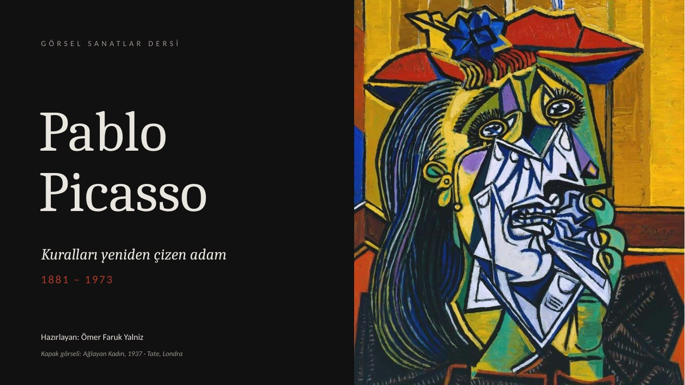

Pablo Picasso
/ Sunum
↓ PPTX indir
⛶
Tam ekran

Fırçadan tabloya
Picasso'nun eserlerinin yeniden çizilişini izleyin.
Tarayıcınız MP4 videosunu desteklemiyor.
Video oynatılmazsa internet bağlantısını ve tarayıcı desteğini kontrol edin.
← → slayt değiştir · F tam ekran
Slaytlar bu sayfada yerel olarak görüntülenir; PowerPoint hesabı veya harici görüntüleme hizmeti gerekmez.